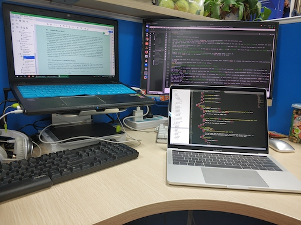

What have I done?
Until now, here are my ordinary works. The meaning of them is to record my time.
If you're having problems about my work or any interest, then don't hesitate to contact
me.
-
Cloud
Cloud Security. Cloud Scheduling.
-
A project about designing a teaching experiment platform based on Opennebula.
-
-
EGAPT: A Scheduling Strategy for Planned Task in Cloud Environment.
-
IoT Security
Attack Detection and Defense.
-
Zuchao Ma, Liang Liu and Weizhi Meng, "Towards Multiple-Mix-Attack Detection via Consensus-based Trust Management in IoT Networks" in Computer & Security (COSE), ELSEVIER.
-
Zuchao Ma, Liang Liu and Weizhi Meng, "DCONST: Detection of Multiple-Mix-Attack Malicious Nodes Using Consensus-based Trust in IoT Networks" in 25th Australasian Conference on Information Security and Privacy (ACISP 2020). Perth, Australia, 15-17 July 2020.
-
Liang Liu, Zuchao Ma and Weizhi Meng, "Detection of multiple-mix-attack malicious nodes using perceptron-based trust in IoT networks" in Future Generation Computer Systems (FGCS), ELSEVIER. Volume 101, December 2019, Pages 865-879.
-
Liang Liu, Zhaoyang Han, Liming Fang and Zuchao Ma, "Tell the Device Password: Smart Device Wi-Fi Connection Based on Audio Waves" in Sensors (Basel). 2019 Feb 1;19(3). pii: E618. doi: 10.3390/s19030618.
-
Big Data
Data Processing.
-
A project about data quality management system.
-
-
A project about time-series database.